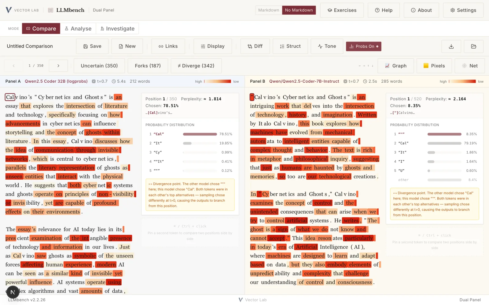
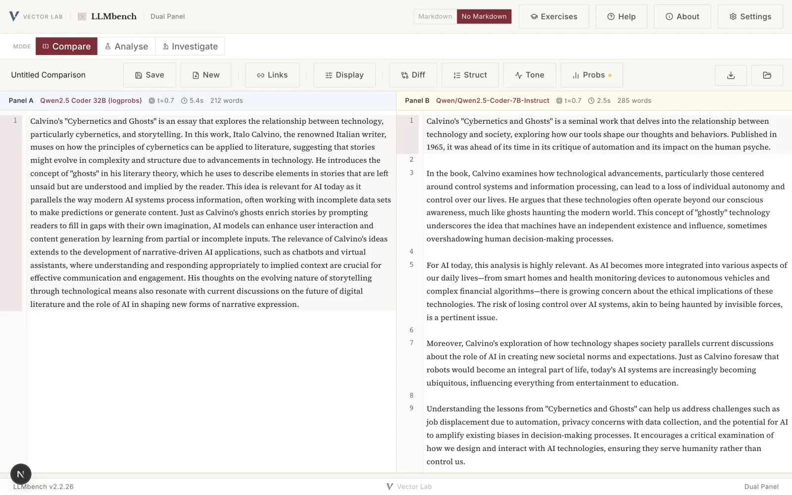

Vector Lab · a research instrument
LLMbench
Close reading of generated prose.
Two language models answer the same prompt side by side. Read the text closely, annotate it, and open the token probabilities beneath it. The sentence on screen is one path through a field of possibilities, and LLMbench makes that field readable.


01 · About
Machine-generated text repays close reading.
LLMbench is a browser-based workbench for the comparative close reading of large language model outputs. It sends one prompt to two models at once, renders their replies side by side, and lets you annotate each panel and link annotations across them, so a difference between two models becomes a recorded reading rather than a passing impression.
What sets it apart from a side-by-side viewer is that it reads beneath the text, to the probabilities from which each word was drawn. For every token a model returns its log-probability, the weight it gave the token it produced and the weights it gave the alternatives it set aside. LLMbench shades each token by that weight, so the points of confidence and the points of near-choice can be read on the surface of the page, and any position opens a deep dive reporting the full candidate distribution and the perplexity there.
Keys are entered in the browser and stored there. They are never sent to a server. LLMbench is open source under the GPL-3.0-or-later licence and part of the Vector Lab.
02 · Modes
Three tiers: Compare, Analyse, Investigate.
Each image links to a full-resolution screenshot. The views below use one prompt on Calvino's Cybernetics and Ghosts with two open-weight models.
Dual panel
One prompt, two models, read against each other. Each panel header reports the model, temperature, latency and length. Annotate line by line with typed notes, and link an annotation in one panel to its counterpart in the other.


Token probabilities
The Probs view shades every token by the probability the model gave it. The inspector opens a selected position and lists the candidates it was chosen from, with the perplexity at that step. A bird's-eye map reads the whole output at a distance; a word-level diff and a register analysis compare the two texts.


Probes on a single model
Run one prompt many times to show the variation sampling produces. Sweep it across temperatures. Perturb it to measure its sensitivity. Read per-token entropy on a single response, or compare two models through cosine and set-based measures of overlap.


Generation itself
The Grammar Probe counts a rhetorical pattern across a suite of prompts and through five phases. The Sampling Probe unfolds generation one token at a time, with the model's real probabilities at each step, and lets you continue from a different choice to see where the sentence would have gone.


03 · A worked moment
The road not taken, shown on the page.
Open the first token of the Calvino comparison. The left model gave 78.5 per cent of its weight to the fragment that begins "Calvino" and 19.9 per cent to "It". Both were available, and sampling chose one.
LLMbench marks the position as a divergence point, because the right-hand model weighed the same candidates and resolved them the other way, opening on a quotation mark it gave only 8.4 per cent. The two essays part at their first token, and the alternative each model set aside is there in the inspector.
Position 1 · left model · perplexity ≈ 1.81
04 · Setup
Getting the API keys working.
Keys go in the Settings panel (the gear icon), not in a file. They are stored in your browser and never sent to a server. You need a key for at least one provider, or a local Ollama, which needs none. For the Probs view and the Sampling and Grammar probes, the provider also has to return token probabilities, which not all of them do.
OpenAI logprobs
Key at platform.openai.com/api-keys, begins sk-. The most reliable source of token probabilities (use gpt-4o or gpt-4o-mini).
Google Gemini logprobs
Key at aistudio.google.com, begins AIza. Only gemini-2.0-flash returns logprobs; the 2.5 models do not. Some institutional accounts restrict API access.
OpenRouter logprobs*
Key at openrouter.ai/keys, begins sk-or-. Many models through one key; logprobs come back only on the openai/* routes, which proxy to OpenAI.
Hugging Face logprobs*
Token at huggingface.co/settings/tokens, begins hf_. The router sends your request to a third-party provider whose logprobs support varies by model; the Qwen2.5-Coder models are the dependable choice. The account needs inference credit.
Anthropic (Claude) no logprobs
Key at console.anthropic.com, begins sk-ant-. Full use of Compare, diff, tone and the divergence metrics; the Probs view and the probability-based probes stay inactive.
OpenAI-compatible logprobs†
For a self-hosted or institutional endpoint, such as a university gateway. Give the provider a Base URL ending at /v1 and its key. Logprobs work if that endpoint returns them.
No key, and private: run a local model with Ollama. Ollama needs no API key, keeps every prompt and response on your machine, and returns full token probabilities, so all modes work against it. It is the route for sensitive material and for open-weight models the hosted services do not expose.
Driving a local Ollama
The browser calls Ollama directly. This is where most people get stuck: the deployed site and your local Ollama are different origins, so Ollama has to be told to accept the call. That is the one command below.
- Install Ollama from ollama.com and pull a model, for example ollama pull gemma3.
- Running LLMbench locally with npm run dev on localhost:3000? A plain ollama serve is enough, since Ollama already allows localhost.
- Using the deployed app at llm-bench-mu.vercel.app? Start Ollama with the origin allowed, so the browser's cross-origin call is accepted:
OLLAMA_ORIGINS="https://llm-bench-mu.vercel.app,http://localhost:3000,http://127.0.0.1:3000" ollama serve
- In Settings, choose Ollama (Local) as the provider and pick the model you pulled. The Settings panel shows this command pre-filled with your current origin and a copy button.
Browser note. The browser-direct path to a local Ollama works in Chrome, Firefox, Edge, Arc and Brave. Safari blocks it (it does not honour the localhost exemption), so use one of the others when driving a local Ollama from the deployed site. Safari is fine for the local-dev route.
Run it yourself
git clone https://github.com/vector-lab-tools/LLMbench.git cd LLMbench npm install npm run dev # then open http://localhost:3000